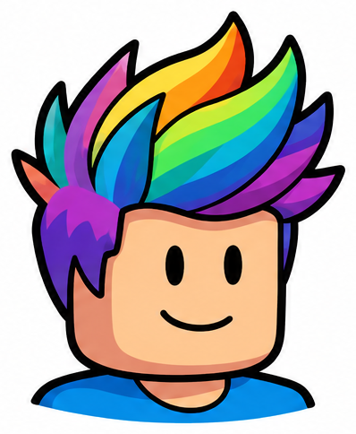
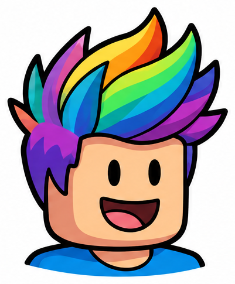
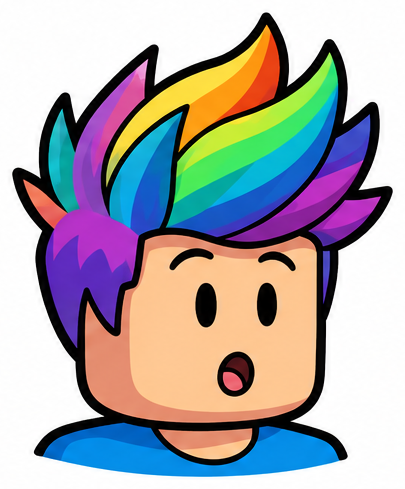
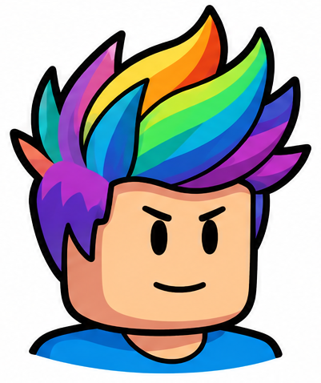
Concentration and determined-persistence have similar brows/smiles. Treat the distinction as an intended label, not validated emotion recognition.
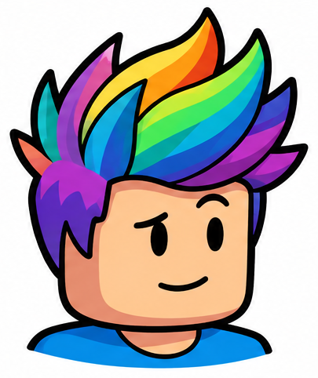
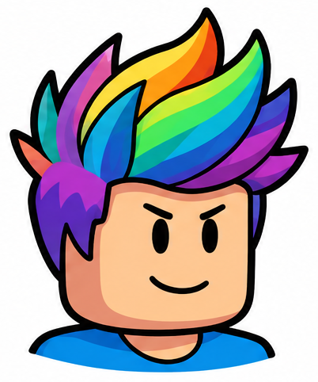
Visually similar to concentrating; do not infer a learner emotional state from this art.
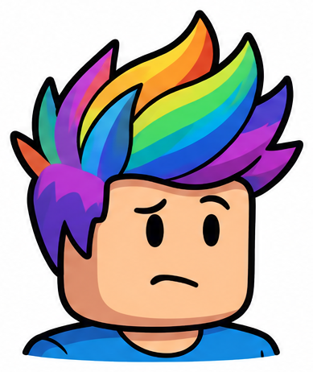
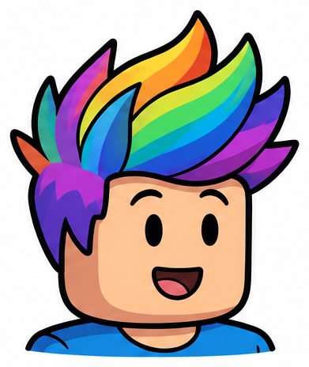
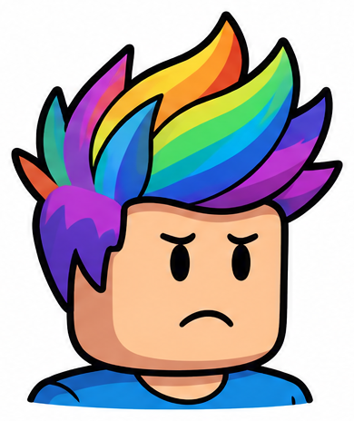
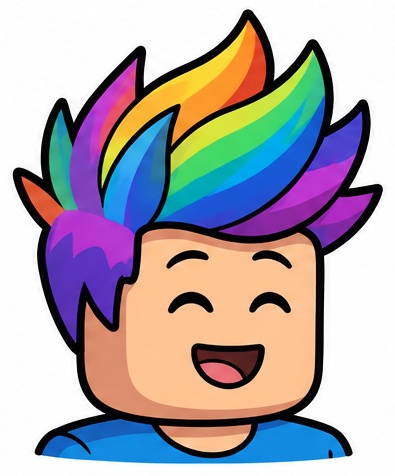
Reads as broad cheerful delight more than quiet relief; expression suitability needs review.
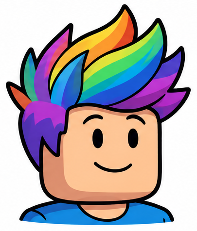
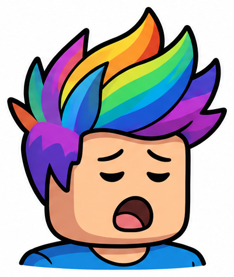
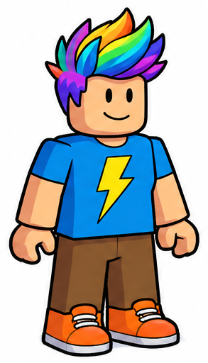
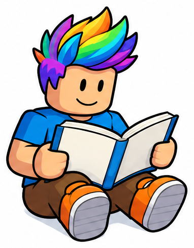
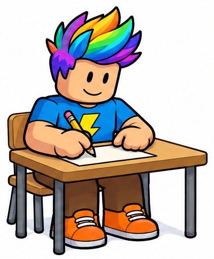
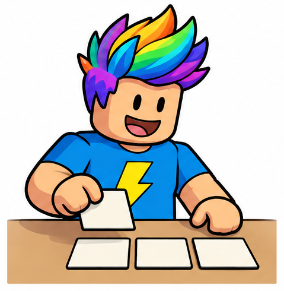
Upper-body/work-surface view; lower body not shown. Broad tile-moving gesture, not a validated word-building sequence.
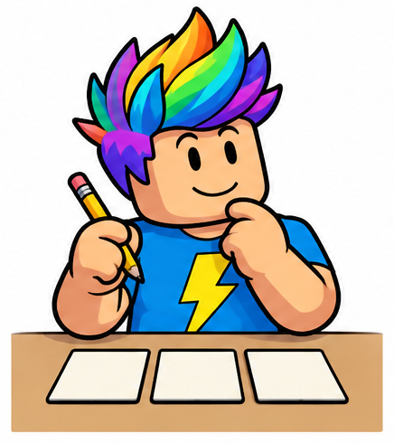
Upper-body/work-surface view; lower body not shown. Pencil appears above unmarked cards, no selected answer.
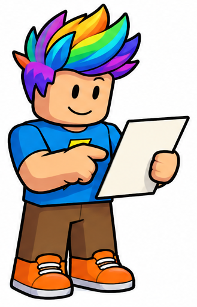
Points toward a blank page; not a validated finger-in-contact tracking sequence.
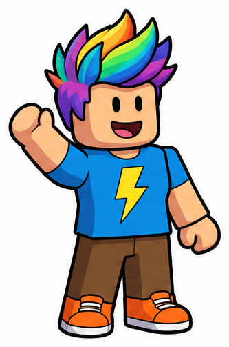
Raised arm may also read as greeting; use the task prompt to specify asking for help.
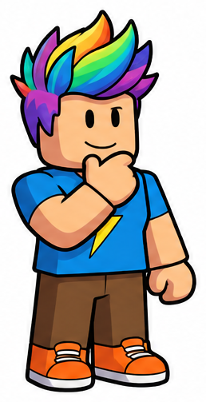
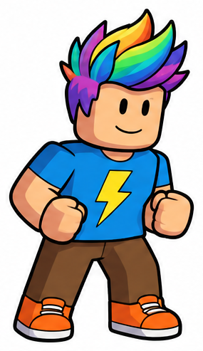
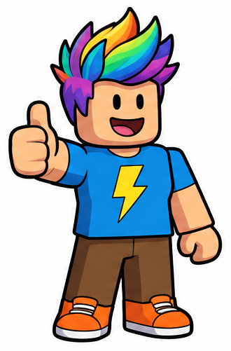
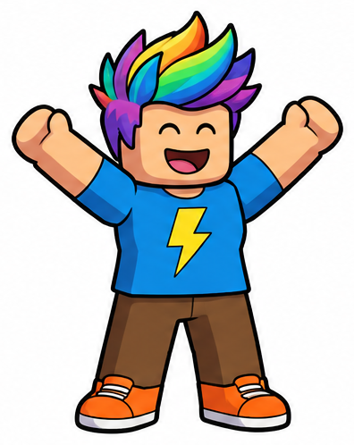
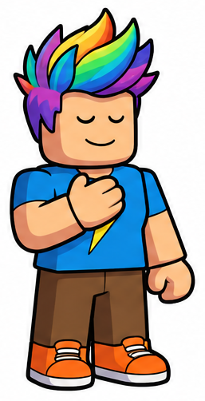
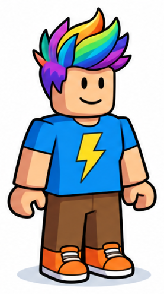
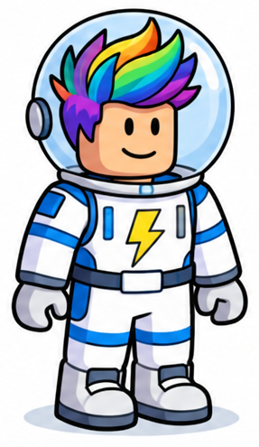
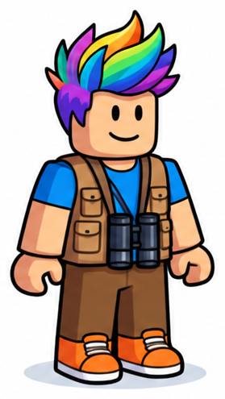
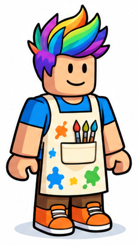
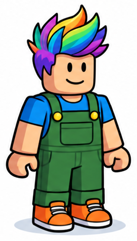
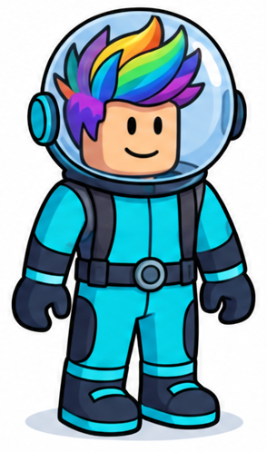
Stylized fictional clear-dome costume, not realistic diving equipment or safety guidance.
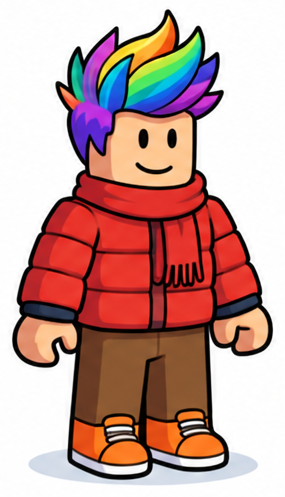
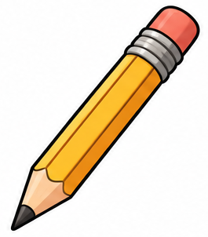
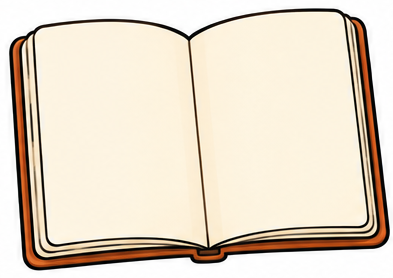
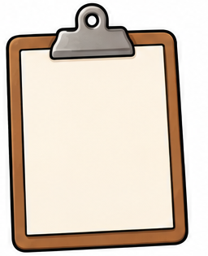
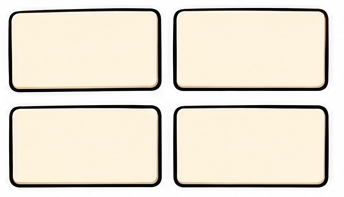
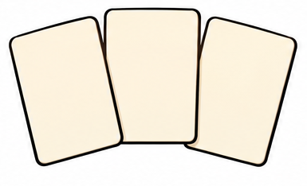
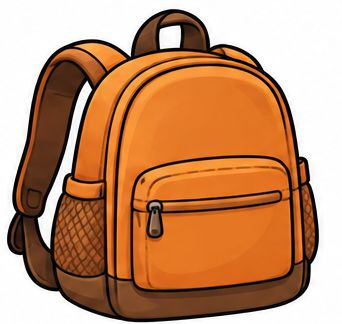
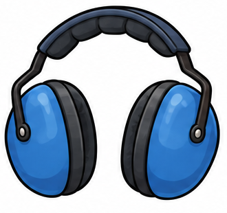
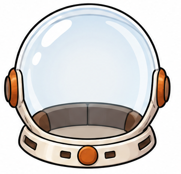
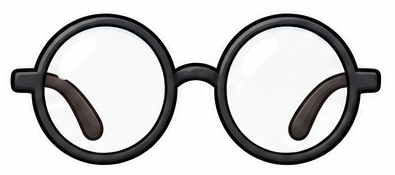
May cover eye details; future scene must still pass original identity check.
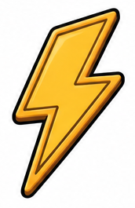
Matches the identifying shirt motif; keep distinct from earned score/reward tokens.
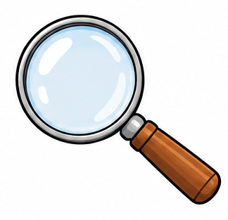
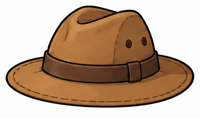
Can hide characteristic hair; optional only, require explicit owner approval of occlusion.